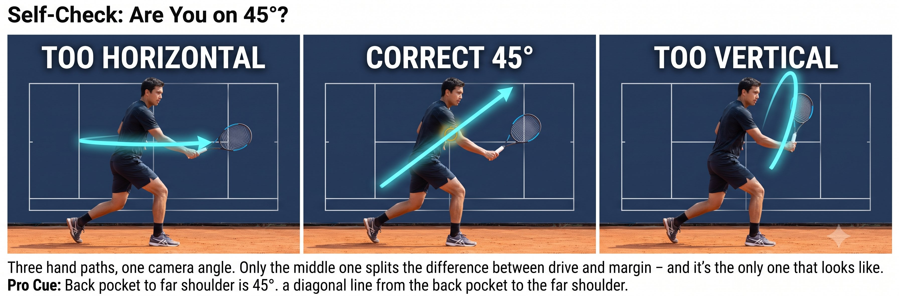

Chapter 14: 45-Degree Swing Plane
(English version of Chapter 14 in the United Tennis Handbook)
CHAPTER 14

Figure 1
45-DEGREE SWING PLANE
The Sweet Spot (45°)
Not vertical, not horizontal. Forty-five degrees is where drive and topspin become a single force.
A pure horizontal swing is flat and fast, but has no margin, no heavy ball, no SSC drop. A pure vertical swing gives you loopy topspin and plenty of margin, but no penetration — it just sits up.
— Henry Pham
Why 45 Degrees
The 45-degree plane gives you both at once:
– Forward component: drive, impulse, jin penetration.
– Upward component: topspin, safety margin, dip, a heavy ball that kicks up off the court.
The Principle
At 45 degrees, you split the energy 50/50. For tennis court geometry, that split is optimal — you clear the net by about three feet and still make the ball dip inside the baseline.
What the 45-Degree Plane Actually Is
It isn't racket face angle. It's the swing plane — the path your hand travels through contact — and getting that path onto the 45-degree diagonal is what lets the forward and upward components of the swing coexist instead of competing with each other.
Figure 14.1: This is the whole chapter as one picture. Flat gives you drive with no margin. Vertical gives you margin with no penetration. Forty-five degrees is the only angle that splits the difference.

Figure 2
How 45° Regulates Power With the Figure-8 and the Brake
The Rule
A 45-degree plane keeps tensegrity loaded in both the spiral line and the back line simultaneously — you use the oblique and the lat together, not just one of them.
Figure 14.2: Same net, same court, five completely different outcomes — and the only thing that changed row to row was where the swing plane sat between flat and vertical.

Figure 3
Braking on 45°: Where Jin Comes From
The brake has to live on the 45-degree plane too.
– Forehand: the front leg brakes forward and up at 45 degrees — you feel it screw into the ground and push upward at the same time. That redirects energy up the 45-degree glass, so the impulse arrives with topspin already built in.
– Backhand: the chest brakes while staying side-on, but you feel the lat brake upward at 45 degrees — the elbow stops rising and the edge snaps through.
– Bruce Lee's one-inch punch runs on the same 45-degree plane — the fist travels slightly upward, never straight across. That's exactly what lifts the opponent off their feet.
Figure 14.3: The brake isn't just a stop. It's a stop aimed at 45 degrees — which is exactly what turns a dead stop into upward-traveling force.

Figure 4
Coach's Note
Check it on video from the side: the hand path through contact should run from the back pocket to opposite-shoulder height — a diagonal. Flat across the chest means too horizontal. Straight up over the shoulder means too vertical. Diagonal means 45 degrees.
Self-Check: Are You on 45°?
Figure 14.4: Three hand paths, one camera angle. Only the middle one splits the difference between drive and margin — and it's the only one that looks like a diagonal line from the back pocket to the far shoulder.
The Rule
45 degrees was never a swing thought. It's the emergent result of the push or saber feel, plus a figure-8 on the plane, plus a hard brake on the plane. You don't "swing at 45 degrees." You push or saber on the glass, and 45 degrees happens on its own.
The 45° Checklist
SMALL 8 ON THE 45° GLASS. HARD BRAKE ON 45°. PULSE ONE INCH.
– Video from the side: hand path from the back pocket to the opposite shoulder means 45 degrees.
– Ball flight: rises about 3 feet over the net and dips sharply in the last 10 feet means 45 degrees.
– Body feel: chest push plus lat lift at the same time means 45 degrees.
– Contact sound: a heavy thud plus a hiss means 45 degrees. A thin slap means too flat. A soft brush means too vertical.
– Brake: the front leg screws down and up at 45 degrees, giving you an impulse with topspin already built in.
– A chest push alone means too flat. A shoulder shrug alone means a moonball. Both together mean 45 degrees.
Where This Leads
This chapter establishes 45° — the swing plane — as the variable in Q-V-ROOT-8-45-Impulse-Jin CORE. Chapter 15 covers braking and impulse as the one-inch pulse, or fa jin. Chapter 16 covers jin as the three manifestations that result.